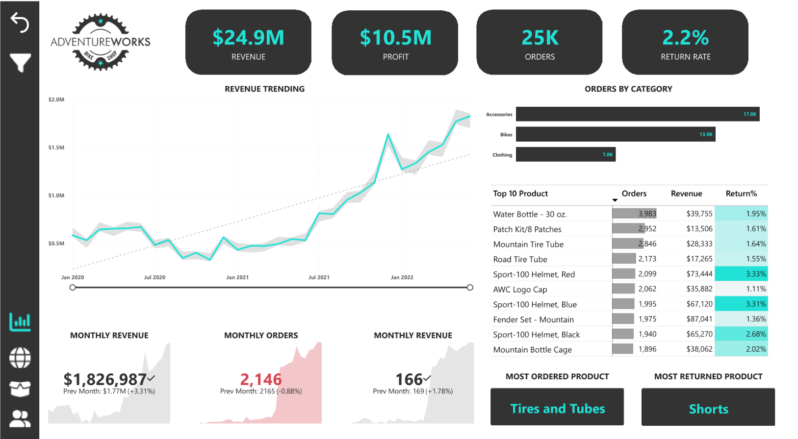

Power BI · DAX · Power QueryAdventureWorks Business
An end-to-end Power BI dashboard analyzing revenue, profit, orders, returns, product performance, customer segments, and geographic sales to support data-driven business decisions.
View Case Study →